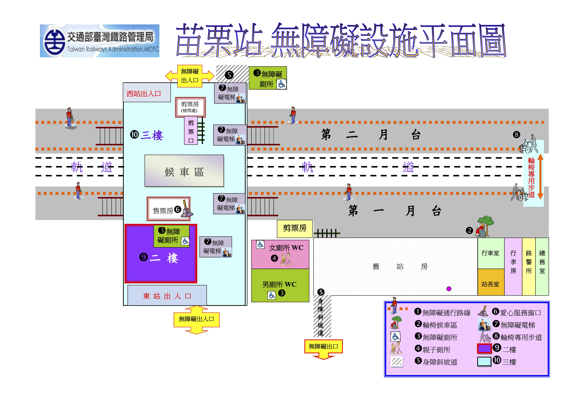

無障礙設施
・無障礙坡道 ・無障礙電梯 ・無障礙售票窗口 ・哺集乳室 ・服務台 (含老弱婦孺或身障旅客購票及諮詢)
一般設施
・大廳 iTaiwan 無線上網 ・存物箱 ・服務台臨時充電 ・對號列車自動售票機 ・誤點證明機 ・樓梯 ・月台
票務服務
・多卡通電子票證 ・兩鐵環保運送 ・ TR-PASS 學生 ・TR-PASS 一般 ・磁卡式定期票 ・內灣一日券 ・集集一日券
行政服務
・遺失物協尋 ・旅遊服務中心
行李房業務
・行包託運 — 位在 1.本站不辦理機車(自行車)及動物等託運業務 2.行李房有提供行李暫存業務